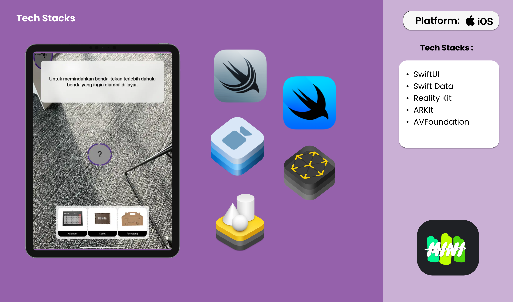

Cognivy : Alzheimer Dimenthia Theraphy



Project Information
- Platform: iOS
- Project Date: Juli, 2024
- Project URL: App Store
Project Overview
An AR app that help early-stage Alzheimer's patients with memory problem to do cognitive memory therapy by placing virtual items in specific locations with relevan context and reordering them after randomization.
Features
- 1. Alzheimer Puzzle Theraphy :An interactive therapy that engages Alzheimer's patients in memory exercises by placing 3 virtual objects in meaningful, real-world contexts. The user must reorder the objects after they’ve been randomized, helping strengthen memory recall and cognitive function.
- 2. Object Randomization :The app randomizes the placement of virtual objects within the physical environment, challenging users to recall and reorder them, enhancing memory retention and cognitive function.
- 3. Theraphy Tracking: the user’s progress with detailed history, time spent on one theraphy session. This helps caregiver monitor progress and adjust therapy based on the user’s needs.
My Role on This Project:
As iOS Developer:
- - Developed AR session features on iPad Pro using LiDAR, enabling object placement and replacement in the AR view for enhanced user interaction.
- - Developed storage features with overlays to enable object pickup and placement from ARKit anchors, enhancing interactivity and user experience.
- - Collaborated closely with 2 developers to maintain clean code and ensure a clear system design using the MVVM design pattern under the guidance of Tech Mentors
As Researcher:
- - Designed and conducted user research by creating interview questions for caregivers and patients, performing in-depth user interviews, and analyzing results to develop user personas, customer journey maps, and actionable solution concepts.
- - Collaborated with neurologists and caregiving professionals to ensure the app met clinical needs and therapeutic goals, applying their feedback to refine the app’s functionality.
- - Performed feasibility tech studies on Apple’s native and external frameworks, assessing their compatibility with the app’s features and identifying the most viable technologies for integration.
Reflections
- Working on Cognivy was a transformative experience that not only honed my AR development skills but also deepened my empathy for the elderly, particularly those with Alzheimer's. Leading usability testing with elderly participants gave me a firsthand understanding of their challenges, while showcasing how technology can significantly improve their lives. This project was my first experience with ARKit, LiDAR, and interactive overlays, and it provided invaluable hands-on experience in creating intuitive, immersive AR features. Additionally, I learned to collaborate with expert caregivers, ensuring the app met both clinical standards and user needs. I’m proud to have contributed to a project that makes a real, meaningful impact.